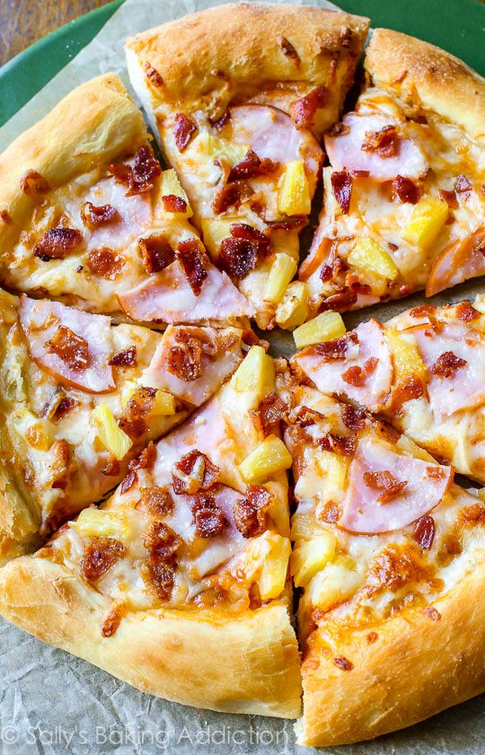

Hawaii pizza

Description
Hawaiian pizza is the most underrated pizza on the planet. Combining pineapple, cheese, and ham, Hawaiian pizza is sweet, salty, and cheesy all in 1 bite. It’s just the BEST pizza variety! We’re using my homemade pizza crust and adding bacon on top. Bacon isn’t a traditional Hawaiian pizza topping, but everything goes with bacon… right?
Ingredients
- 1/2 recipe homemade pizza crust
- 1/2 cup (127g) pizza sauce (homemade or store-bought)
- 1 and 1/2 cups (6oz or 168g) shredded mozzarella cheese
- 1/2 cup (75g) cooked ham or Canadian bacon, sliced or chopped
- 1/2 cup (82g) pineapple chunks (canned or fresh)
- 3 slices bacon, cooked and crumbled
Steps
- Prepare pizza dough through step 5, including preheating the oven to 475°F (246°C). Cover the shaped dough lightly with plastic wrap and allow it to rest as the oven preheats.
- To prevent the pizza toppings from making your pizza crust soggy, brush the shaped dough lightly with olive oil. Using your fingers, push dents into the surface of the dough to prevent bubbling. Top the dough evenly with pizza sauce, then add the cheese, ham, pineapple, and bacon.
- Bake pizza for 12-15 minutes. Remove from the oven and top with fresh basil, if desired. Slice hot pizza and serve immediately.
- Cover leftover pizza tightly and store in the refrigerator. Reheat as you prefer. Baked pizza slices can be frozen up to 3 months.